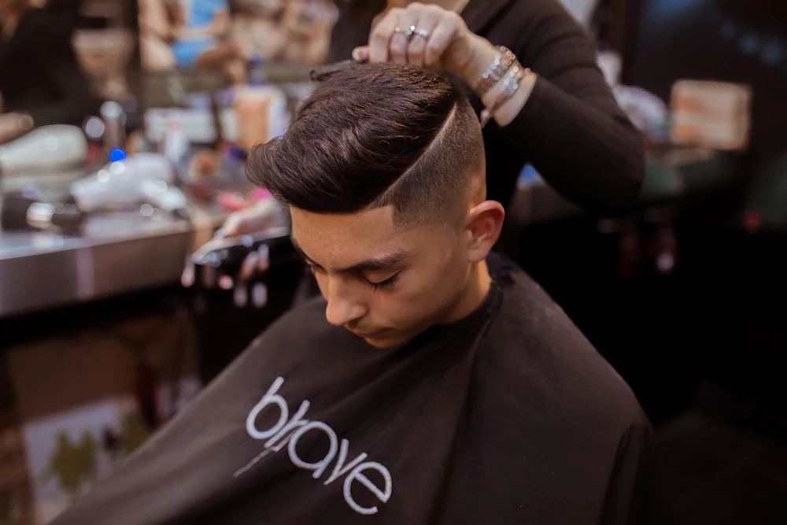
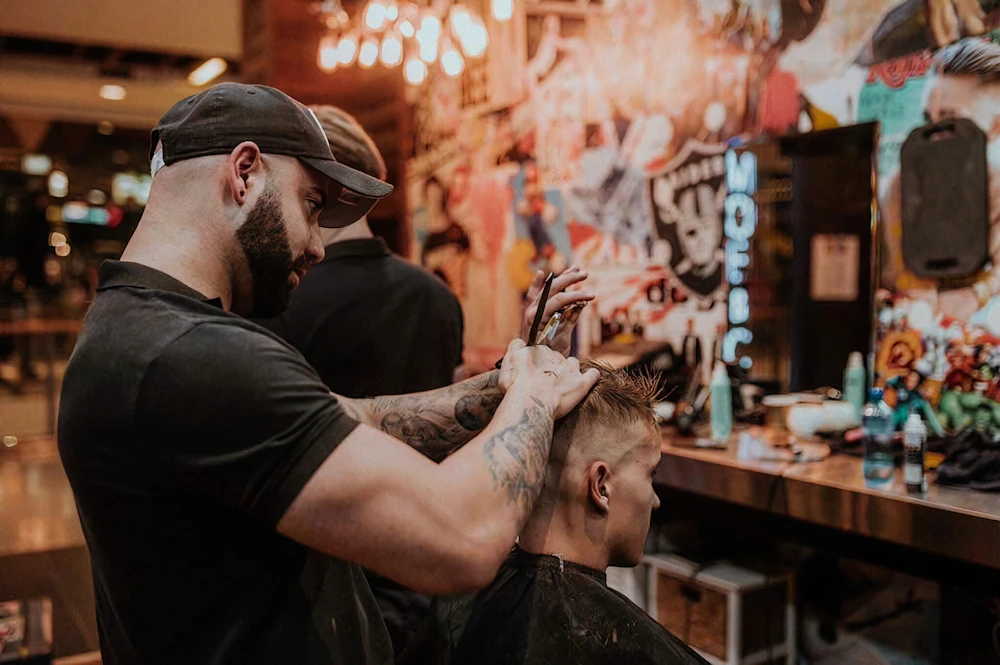

MAIS QUE UM CORTE. UM RITUAL.
SEU ESTILO.
NOSSA
ASSINATURA.
Seu melhor visual começa com um bom cuidado.
Técnica nas mãos. Personalidade em cada detalhe.
01 / NOSSA ASSINATURA
UM BOM CORTE
MUDA O SEU DIA.
Do clássico ao contemporâneo, o melhor estilo é aquele que faz sentido para você.
Corte de cabelo
Consulta de estilo, técnica e acabamento.
Barba & acabamento
Desenho que respeita os seus traços.
O ritual completo CORTE + BARBA
Renove o visual. Reserve esse momento.
Serviços, durações e valores ilustrativos para esta demonstração.
02 / ESCOLHA SUA PRÓXIMA VERSÃO
O DETALHE FAZ
A DIFERENÇA.

DEGRADÊDegradê clássico
01Clássico na tesoura
02
TEXTURACurto texturizado
03Inspirações para o seu próximo corte. As imagens são referências de estilo.
03 / A ARTE ESTÁ NAS MÃOS
O QUE É BEM
FEITO, VOCÊ
SENTE.
A tesoura encontra o ritmo. O pente encontra a forma. E cada detalhe encontra o seu lugar.
Na Mãos de Ouro, acreditamos que um bom corte começa com escuta e termina com você se reconhecendo no espelho.
Conheça nossa filosofia ↗04 / A SUA CADEIRA ESTÁ AQUI
SEU PRÓXIMO
CAPÍTULO.
UM NOVO CORTE.
Escolher meu horário Prefere conversar? Chama no WhatsApp ↗